1. What this setup is for
A typical small ICM project may have only one or two people who build and run the model, while several other people need to see the model and results. Those reviewers may include GIS staff, engineering/design teams, clients, managers, or other project stakeholders.
ICM Cloud gives the project one shared source. Instead of repeatedly creating screenshots, PDFs, PowerPoints, or separate copies of the model just so other people can review the work, the model can be stored in the cloud and the right people can be given access when they need it.
2. How the workflow works
The top half of this diagram shows when different groups commonly need access. The lower half shows the setup actions performed by the two administration roles. In a small organization, the same person may perform both roles.
The setup boxes are clickable. They jump to the detailed instructions below. Official Autodesk help links are included inline beside the steps they support, so you can open the source guidance without leaving your place in the manual.
3. Before you start
| Role | What is needed |
|---|---|
| IT / Cloud Admin | Autodesk account, appropriate administration permissions, the customer's chosen data region, and access to the Autodesk Account management pages. |
| Project Admin Usually the modeler | Autodesk account and Project Administrator access. The modeler also needs the full InfoWorks ICM desktop application and appropriate license. |
| Reviewer | An email address, an Autodesk account using that same email address, Project access, and the free InfoWorks ICM Viewer. |
For most small customers: keep the structure simple. Use the existing Autodesk Team, create one Hub in the appropriate region, and use Projects to separate jobs or groups that should have different access. Autodesk Help: Hubs and Regions ↗
4. IT / Cloud Admin — set up the cloud environment
The IT / Cloud Admin establishes the shared environment. After the Hub, Project, and initial modeler access are ready, most day-to-day membership work can be handled by the Project Admin.
4.1 Create the Hub and choose the Region
- Sign in to Autodesk Account.
- Open Products and Services, then open Hubs. Autodesk Help ↗
- Confirm the correct Autodesk Team is selected. For a small customer, normally use the existing Team rather than creating additional Teams.
- Select Create hub, then choose Info360.
- Enter the Hub name.
- Select the appropriate Data region.
- Select Create & Activate.
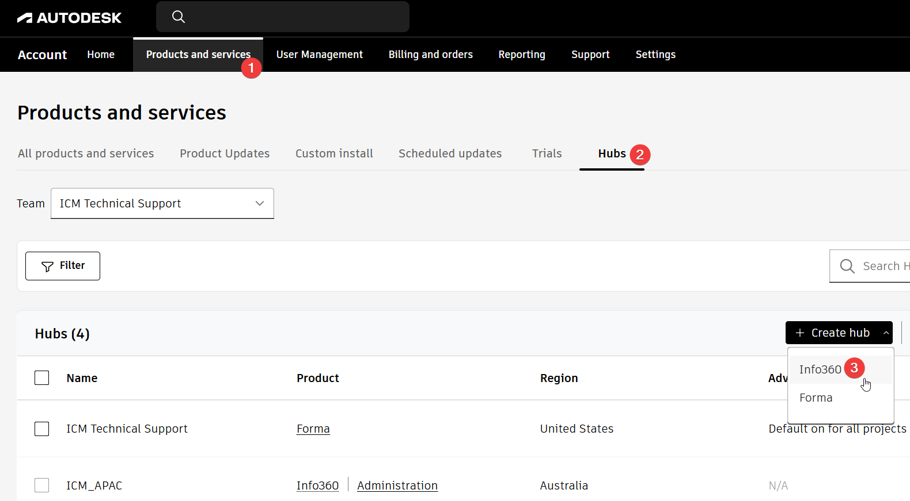
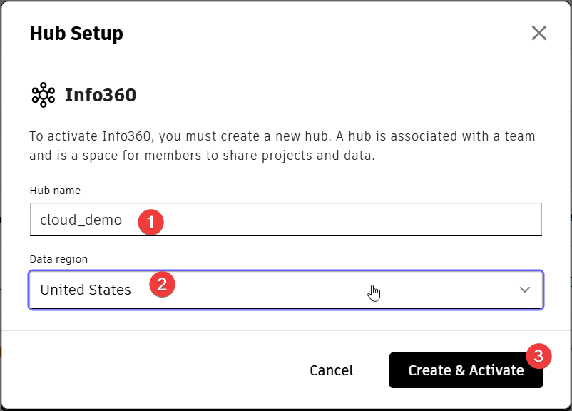
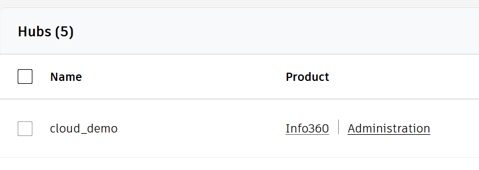
4.2 Create the Project
- From the Hub, select Administration. This opens the Project administration environment.
- Select Create project. Autodesk Help: Project Administration ↗
- Enter a Project name and select the correct Hub.
- Complete any other Project fields required by your organization.
- Select Create project.
If you are already a Project Admin and do not need to manage the Hub, you can open the Autodesk project administration page ↗ directly.
Official reference: Autodesk Project Administration ↗
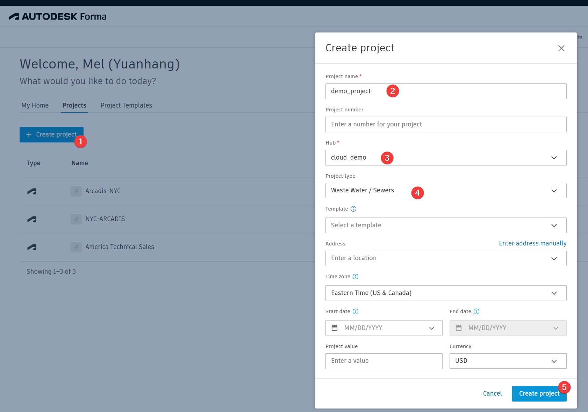
4.3 Add the modeler as Project Admin
- Open the new Project and go to Members.
- Select Add members. Autodesk Help: Manage Project Members ↗
- Enter the modeler's email address and continue.
- Select the appropriate model role. For a modeler who needs to edit, use the editing role appropriate to your environment.
- Set Access Level to Project administrator.
- Enable Info360 Model.
- Send the invitation.
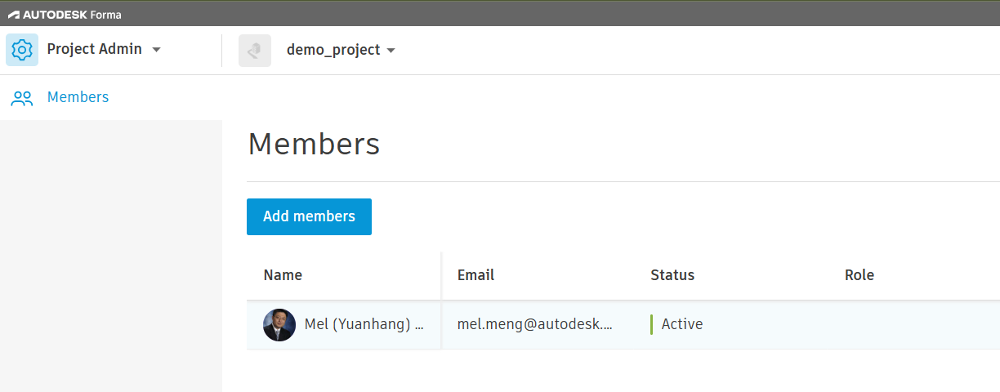
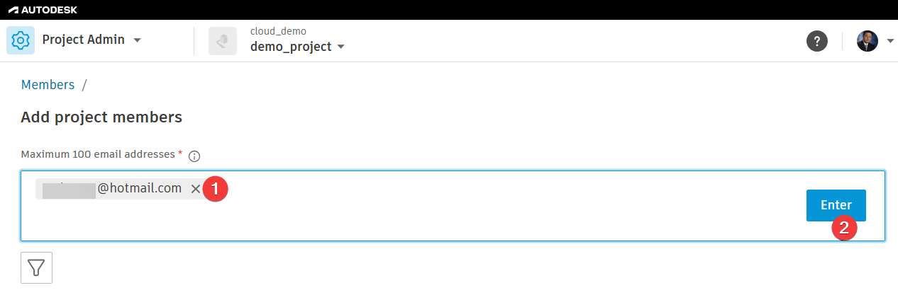
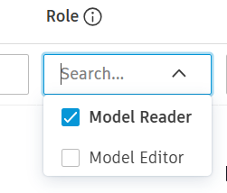
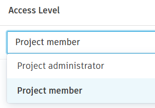
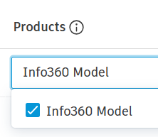
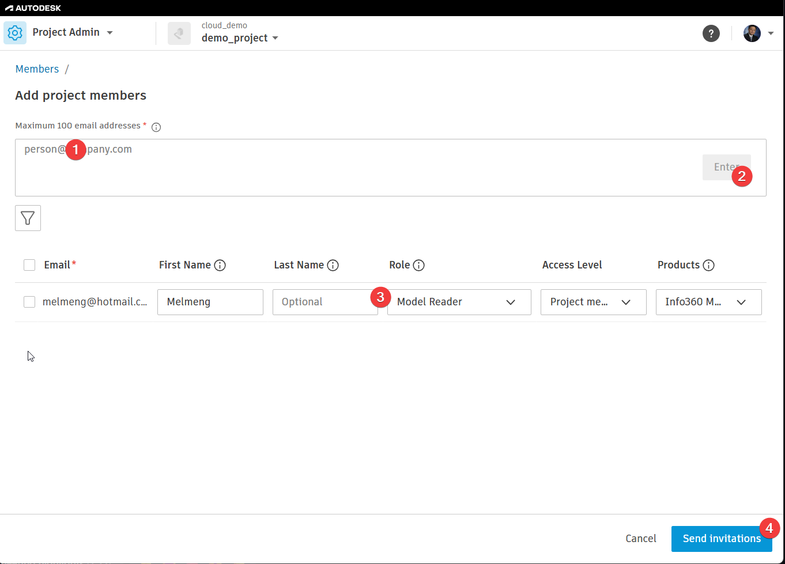
4.4 Confirm InfoWorks ICM software and licensing
The modeler needs the full InfoWorks ICM desktop application and an appropriate license to edit models and run simulations. Autodesk Account administrators assign product access through User Management. Autodesk Help: Assign product access ↗
5. Modeler / Project Admin — create the cloud database
5.1 Open the Project
Use the Autodesk account that was added to the Project. If an invitation email was sent, open it and sign in with the same email address.
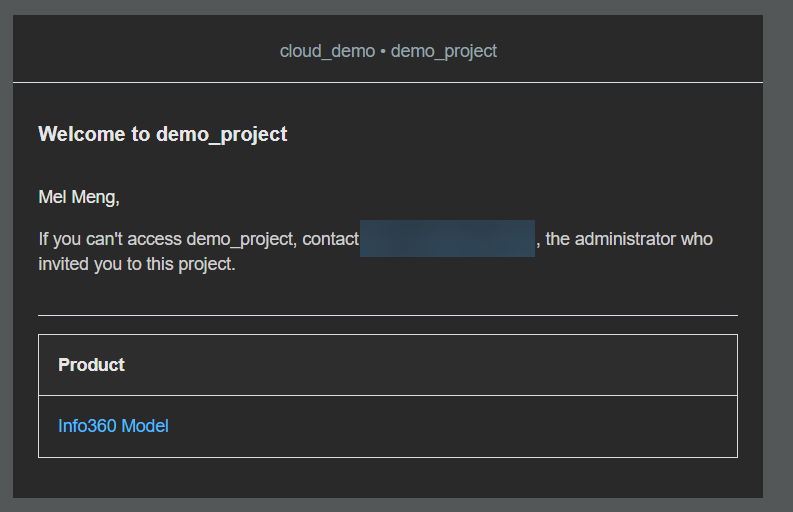
5.2 Create a new cloud database
- Open InfoWorks ICM.
- Select File → Open → Open/Create database. Autodesk ICM Help: Create a Database ↗
- Select Cloud.
- Select the correct Hub and Project.
- Next to Database, select New.
- Enter the database name.
- Select the database version.
- Select OK to create the database.
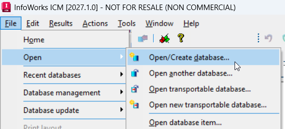
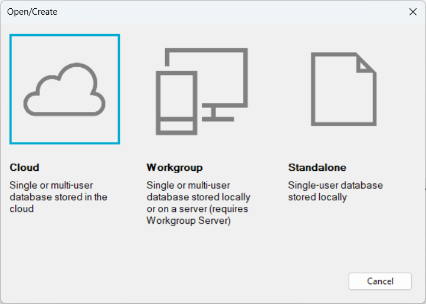
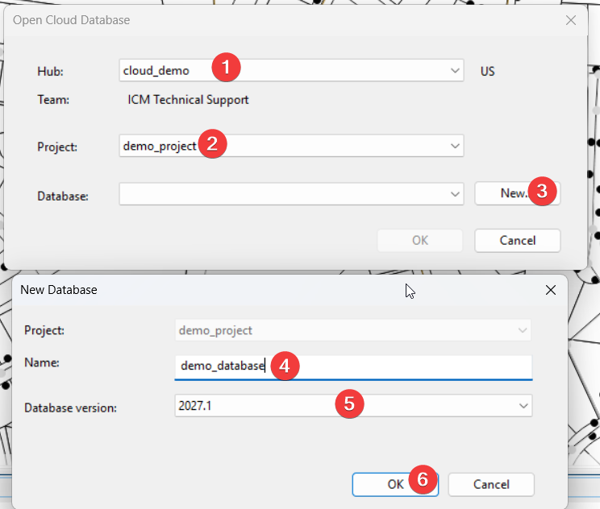
5.3 Build or place the model in the database
For a new project, continue building the model in the cloud database using the normal InfoWorks ICM modeling workflow.
6. Project Admin — add and manage Project users
Project membership is the main control for sharing the cloud model. Add people when they need access, update their role if their responsibility changes, and remove them when access is no longer required.
6.1 Add a review-only user
- Open the Project and go to Members.
- Select Add members. Autodesk Help: Manage Project Members ↗
- Enter the reviewer's email address.
- Set Role to Model Reader.
- Set Access Level to Project member.
- Enable Info360 Model.
- Send the invitation.
This same review-only pattern can be used for GIS, engineering, client, or other stakeholders who need to inspect the model and results but do not need to edit the model.
6.2 Add, change, or remove access during the project
- Add new members when another group needs access.
- Change a member's role or access level when responsibilities change.
- Remove members who no longer need the Project. Autodesk Help ↗
- Keep Project Administrator access limited to the people who actually need to manage the Project.
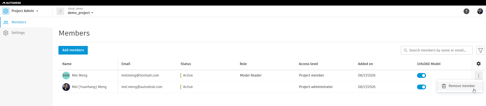
7. Reviewer — install Viewer and open the model
7.1 Use the same email address that was invited
The reviewer should use an Autodesk account associated with the same email address that the Project Admin added to the Project. If the reviewer does not already have an Autodesk account, create one with that email address.
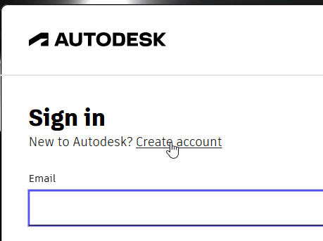
7.2 Download and install the free InfoWorks ICM Viewer
For a reviewer who does not need the full modeling application, use the free InfoWorks ICM Viewer.
- Open the InfoWorks ICM Viewer download page ↗.
- Download the Viewer installer. Autodesk's download page lists current available versions and notes that administrator rights are required for installation. Official Viewer download & install guidance ↗
- Install the Viewer on the reviewer's computer.
- At first launch, sign in with the Autodesk account that was invited to the Project.
7.3 First sign-in
- Start InfoWorks ICM Viewer.
- When the Autodesk sign-in prompt appears, continue with browser sign-in. Autodesk Viewer guidance ↗
- Sign in with the invited Autodesk account.
- When the browser confirms that sign-in is complete, return to the Viewer.


7.4 Open the shared cloud database
- In Viewer, select Open database. InfoWorks ICM Help: Cloud Databases ↗
- Select the cloud Hub.
- Select the Project.
- Select the database.
- Select OK.
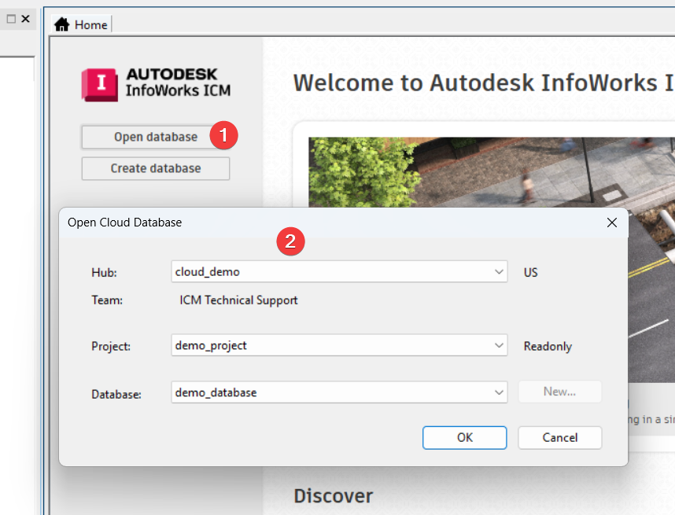
7.5 Confirm the reviewer is ready
At minimum, confirm that the reviewer can see the intended Project, open the intended database, and view the information needed for the project review.
8. End of project
At the end of the project, the Project Admin should review who still needs access.
- Remove external reviewers who no longer need access. Autodesk Help: Manage Project Members ↗
- Remove internal users who no longer need the Project.
- Remove unnecessary Project Administrator rights.
- Confirm who should retain long-term access.
- Confirm the final database/model is stored in the intended Project.
9. Optional — cloud simulation usage
For a small team running a normal number of project simulations, cloud simulation capacity is generally a secondary consideration. If a workflow requires unusually large numbers of concurrent runs, optimization/automation, long-running simulations, or substantial 2D computation, review the expected capacity needs separately. Autodesk Help explains that cloud-simulation quota affects parallel processing behavior and that work can continue sequentially after the quota is exceeded. InfoWorks ICM Help: Runs ↗
Check usage
- Sign in to Autodesk Account.
- Open Reporting.
- Open Resource and API usage.
- Review InfoWorks Cloud Simulation Hours.
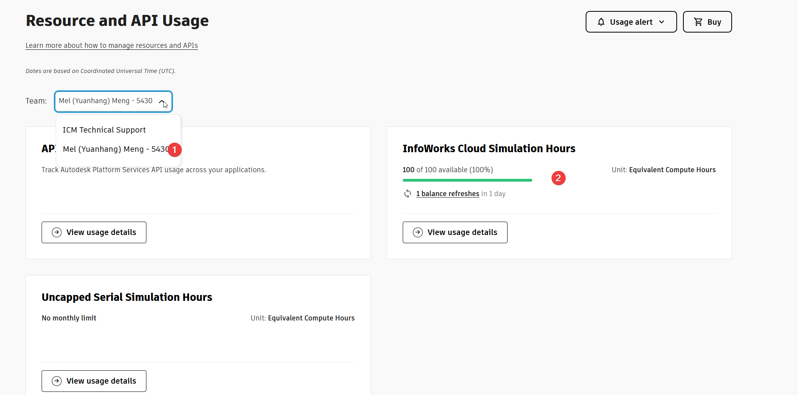
Official references: InfoWorks ICM Help — Runs ↗ · InfoWorks ICM cloud capacity FAQ ↗
10. Troubleshooting
I cannot see the Administration link
- Refresh the Hubs page.
- Confirm the correct Team is selected.
- Confirm that your Autodesk account has the required Hub administration rights. Autodesk Help ↗
I cannot see the Project
- Confirm that the Project Admin added the same email address you are using to sign in.
- Confirm the invitation was sent.
- Confirm you are signed in with the correct Autodesk account.
- Review the Project membership in Project Admin. Autodesk Help ↗
Viewer signs in, but I cannot see the database
- Confirm you are a member of the correct Project.
- Confirm Info360 Model was enabled for your Project membership.
- Confirm you are using the email address that was invited.
- Ask the Project Admin to verify the Project membership and role.
I need to edit or run simulations
The free Viewer is for review-only workflows. Contact the Project Admin / IT Admin if you need the full InfoWorks ICM application and license.
Draft completeness — items still to finish
Before issuing this manual to customers, complete or verify these items:
- MISSING: Full InfoWorks ICM desktop installation and license assignment/check procedure for a new modeler.
- MISSING: Existing local/workgroup/transportable model migration into a cloud Project.
- MISSING: Standard Viewer validation checklist.
- VERIFY: Standard Project creation fields / Project Type.
- VERIFY: Exact modeler role label and permission combination.
- VERIFY: Internal versus external invitation behavior.
- VERIFY: Current Viewer version / cloud-access requirements.
- VERIFY: Current cloud simulation quota/capacity rules if numeric information will be included.
- DECIDE: Whether a formal Project archive/retention procedure belongs in the core manual.